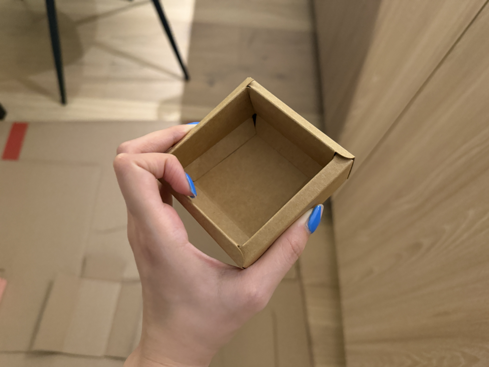
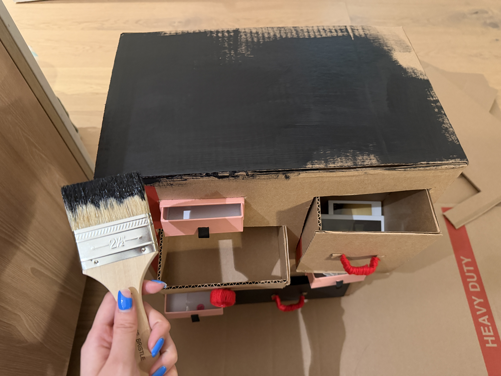
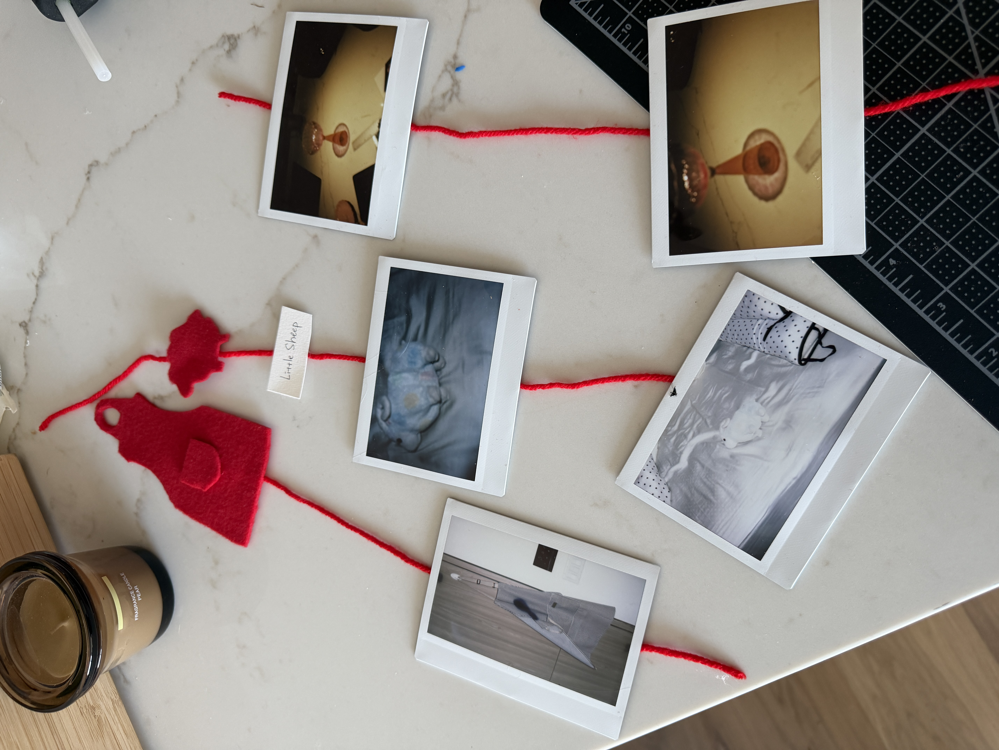

Time Capsule — Part II
01 / Initial Concepts
As all my objects are around my habits, memories and relationships, I wanted to create a time capsule that can exhibit my personal relationships to it.
Idea 1 — Pop-up Book
I want to create a pop-up book because I want my time capsule to be more than a container that simply stores objects. I want the experience of opening it to become part of the storytelling. When others open the book, it will feels like opening my stories, and those memories can gradually emerge between pages. This format reminds me of how memories can suddenly become vivid when we encounter something familiar. Each object in my collection represents a different moment or relationship in my life, and I want to use different paper structures, layers, and heights to show how these memories exist together.


Idea 2 — Memory Cabinet
My second idea is to create a mini cabinet because I am interested in how ordinary objects can become meaningful when they are collected and preserved. A cabinet reminds me of my rooms, that I always keep things meaningful in the cabinets. It also reminds me of a little museum or storage, where each object is given its own space and treated as something worth saving. Most of the objects in my time capsule are not particularly valuable in a material sense, but the personal stories and emotional connections make them important to me. Instead of revealing everything at once, the viewers can choose which compartment to open, creating a sense of curiosity and discovery.


Idea 3 — Umbrella Capsule
I also thought of using an umbrella as the structure of my time capsule. When the umbrella is closed, all the objects are gathered together and hidden within a compact space. As it opens, the objects will gradually spread apart and become visible. I find this transformation meaningful because memories are not always present in our minds, but the objects meaningful to me can suddenly bring them back. I think of umbrella as something that provides shelter and protection. In this project, it could become a space that protects my personal memories from being lost and forgotten. I want to hang the objects at different heights and connecting them with threads to represent the relationships between different moments in my life. The viewer would need to look underneath the umbrella, making the act of viewing more immersive.


02 I Chose the Memory Cabinet
After exploring the three concepts, I decided to further develop my second idea, the Memory Cabinet. To me, a cabinet is much more than a place to store things. It is also a space where I can display my personality, interests, and the things I value most. In my home, I often arrange meaningful objects, collectibles, photographs, and personal belongings inside my cabinets. The objects I choose to display are not necessarily the most expensive or practical ones, but they represent things that are valuable to me.


When someone enters my home, they can learn a lot about who I am simply by looking at my cabinets. The way I organize and display my belongings ecomes a form of self-expression. My cabinets are almost like small personal exhibitions, revealing my habits, preferences, memories, and relationships. I wanted my time capsule to function in a similar way. Rather than presenting all six objects at once, I wanted to give each memory its own compartment and allow viewers to discover them individually.
It also gives freedom to the viewer, making the time capsule fun to explore, and also allowing the viewers to understand that these things are important to Sisley. I like how this resembles the process of getting to know another person. We do not understand someone's identity all at once. Instead, we gradually discover their stories, interests, and relationships through small details and personal experiences.
03 / Making Process
Building the Outer Structure
I used a cardboard box to make the main structure of the cabinet. I cut several openings in different sizes and positions to create spaces for the drawers. I also added pieces of cardboard inside the box to provide support for the drawers.


Drawers
I used cardboard, cardstock, and small packaging boxes to construct the individual drawers.




Handles
For the handles, I wrapped yarn around folded pieces of cardboard and bottle caps. I wanted to experiment with different shapes and textures rather than using identical handles for every drawer.


Exterior
I painted the outside to be black using acrylic

Connecting the Memories
I took some photos of my objects using instant camera and also made some silhouettes of them. I wanted to visualize the connections through threads, creating a small network of memories within the cabinet.

04 / Final Outcome
This is my time capsule, a memory cabinet. Rather than creating a traditional cabinet with identical drawers, I wanted each compartment to have its own appearance and opening mechanism. This makes the process of exploring the cabinet less predictable and encourages viewers to investigate what might be hidden inside.


Reflection
Through this project, I started thinking more about how the design of a container can influence the way people discover and understand the objects inside it. When I first collected the objects for my time capsule, I mainly focused on their personal meanings and the memories associated with them. However, designing the physical capsule made me consider the experience of someone who does not know me or the stories behind these objects.
One of the reasons I chose the Memory Cabinet was that I wanted the discovery process to feel personal and exploratory. I like the idea that different viewers might discover the objects in different orders and therefore form different first impressions of me. This reminds me of how we get to know another person in real life. We do not understand someone's identity immediately, but gradually learn about them through their belongings, habits, stories, and relationships.
I also found the process of making the cabinet interesting because the materials influenced many of my design decisions. Cardboard was easy to cut and assemble, but making drawers that could fit and move smoothly required more careful measurements than I originally expected. Experimenting with different sizes of openings and handmade yarn handles made me think about affordances, that the shape and texture of an object can suggest how someone should interact with it. I wanted the handles look interesting enough to invite people to pull and explore, even without written instructions.
Overall, this project helped me understand that a time capsule is not only about preserving objects, but also about designing how their stories will be encountered. Through the Memory Cabinet, I wanted to transform a collection of ordinary belongings into a personal archive that invites curiosity and exploration. I hope that someone discovering this cabinet in the future would not only learn about the objects I valued, but also begin to understand the relationships, experiences, and memories that shaped who I was.